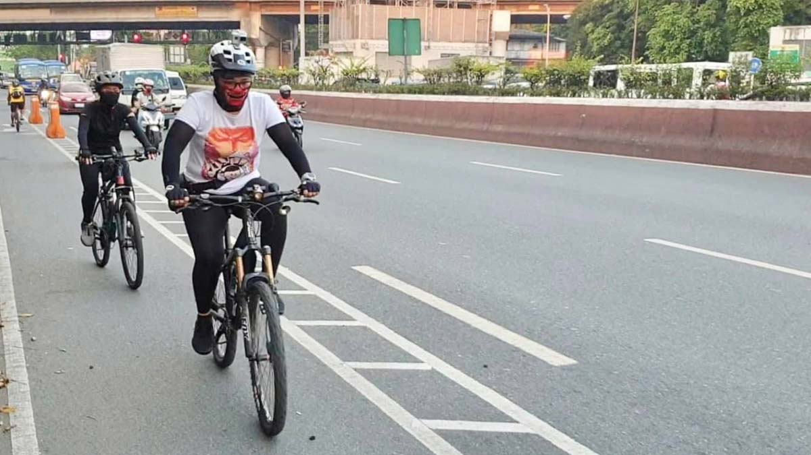
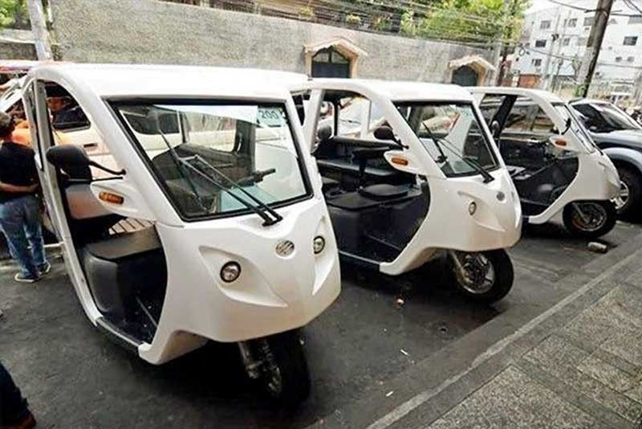

Welcome to our Future
This website promotes UN SDG in the Philippine context.
About SDG 11
SDG 11 aims to make cities inclusive, safe, resilient, and sustainable. We focus on urban mobility and transport systems.
Biking in the City
Biking is a sustainable way to move around. Metro Manila has new bike lanes and initiatives like in Pasig City.
Electric Vehicles (EVs)
EVs are gaining popularity. Learn about their benefits and where to charge them in the city.
